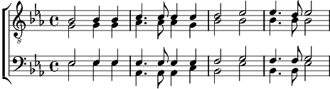

6. Panis Angelicus fit panis hominum
Dat panis coelicus figuris terminum figuris terminum
O res mirabilis mirabilis
Manducat Dominum, Manducat Dominum
Pauper servus; pauper servus et humilis
7. Tetrina Deitas unaque poscimus
Sic nos tu visita situt te colimus, sicut te colimus:
Per tu as semitas, as semitas
Ducnoquo tendimus, ducnoquo tendimus
Ad Lucem quam adlucem quam in habitas
Coda:
Amen!